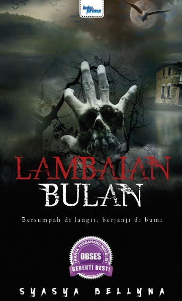
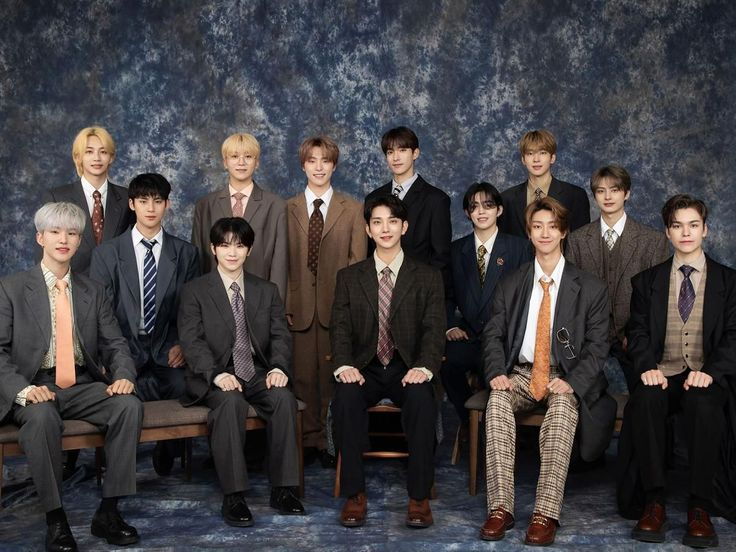
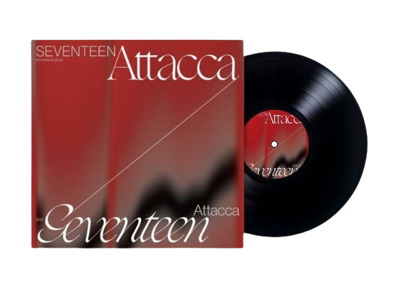
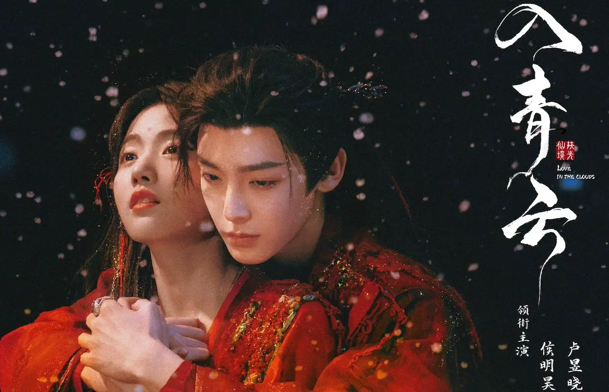
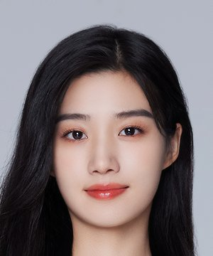

📚 Book Pick

Reading books is one of my favorite hobbies because it allows me to relax and explore different stories and emotions. One of my favorite books is Lambaian Bulan by Syasya Bellyna.
Soundtrack of My Life


SEVENTEEN is my favorite K-pop band because of their talent, teamwork, and meaningful music. They are known as a self-producing group, which means the members take part in writing, composing, and choreographing their songs. This makes their music feel more personal and sincere. SEVENTEEN also stands out for their strong performances and the close bond between the members, which makes them inspiring to fans.
My favorite song by SEVENTEEN is “To You” from their album Attacca. This song has a bright and emotional sound that feels warm and comforting. The lyrics express gratitude and affection, making it feel like a heartfelt message to someone important. Whenever I listen to “To You,” it gives me a sense of happiness and encouragement, which is why it means a lot to me. Overall, SEVENTEEN and their music, especially “To You,” have a special place in my heart.

| Main Cast | Details | |
|---|---|---|
Hou Ming Hao Lu Yu Xiao |
Title: Love in The Clouds
|